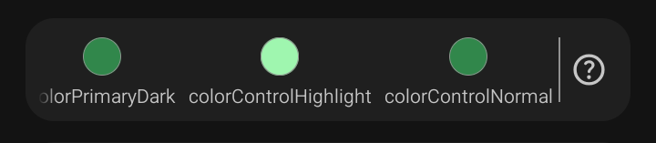
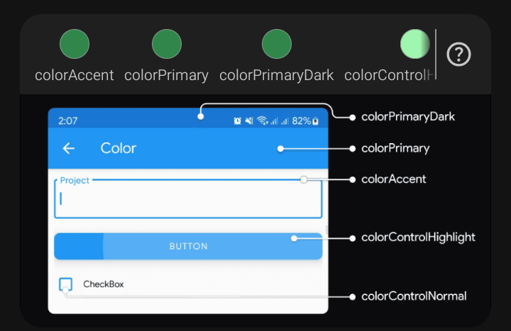
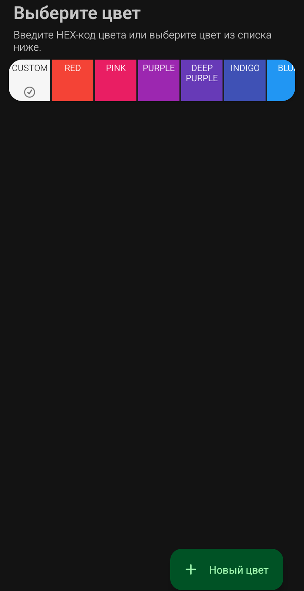
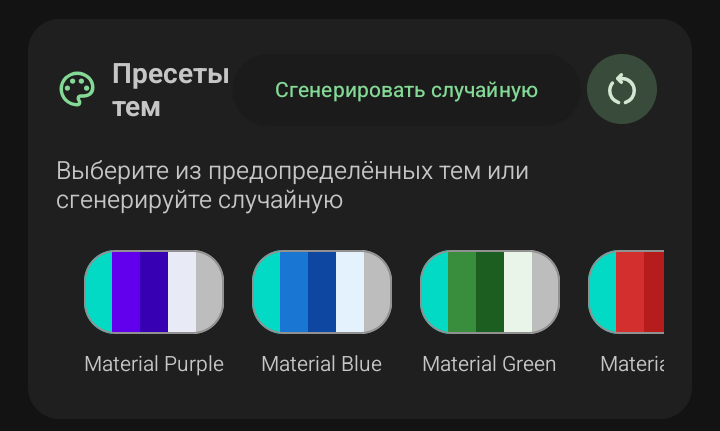

Цветовая палитра — это блок под текстовыми полями, где задаётся основа Material-темы приложения: цвета, которые Android будет использовать для шапки, кнопок, акцентов и подсветок во всех экранах.
В Sketchware Pro 7 палитра состоит из пяти цветов. Пять кружков идут в ряд под полями ввода:
⚠️ Важно: в некоторых сборках Sketchware порядок кружков может визуально отличаться — подписи под ними (colorPrimaryDark, colorPrimary и т.д.) всегда идут снизу. Ориентируйся именно на подписи, а не на позицию.
Справа от кружков находится значок «?». Тап по нему открывает справочную схему.

макет интерфейса с указателями на каждый цвет. На схеме видно, где именно применяется каждый из пяти параметров:
Эта схема — самый быстрый способ понять, какой цвет за что отвечает, не читая документацию.
При тапе по любому кружку открывается экран «Выберите цвет».

Вверху — заголовок и подсказка: «Введите HEX-код цвета или выберите цвет из списка ниже».
Ниже — горизонтальная лента вкладок:
В правом нижнем углу — кнопка «+ Новый цвет». Она добавляет собственный цвет в список CUSTOM, чтобы не вводить HEX каждый раз заново.
HEX-цвет (hexadecimal color) — это способ записи цвета шестнадцатеричным кодом. Формат: #RRGGBB, где:
Каждая пара — два шестнадцатеричных знака, что даёт 256 значений (от 00 до FF). Всего в формате #RRGGBB можно закодировать 16 777 216 оттенков.
Пример: #3F51B5 — синий цвет Material Indigo 500.
Существует также 8-значный формат #AARRGGBB, где первые два знака — прозрачность (Alpha): 00 — полностью прозрачный, FF — полностью непрозрачный. Такой формат нужен, например, для colorControlHighlight, который должен быть полупрозрачным.
Почему используют HEX, а не слова «red», «blue»:
⚠️ Важно: HEX-код всегда начинается с #. Если ввести 3F51B5 без решётки — Sketchware не распознает цвет и подсветит поле ошибкой.
💡 Совет: если хочешь подобрать точные цвета своей темы — используй бесплатный сайт materialpalette.com или официальный Material Design Color Tool. Там подбираешь оттенки и копируешь готовые HEX-коды.
❌ Частая ошибка: путать порядок в #RRGGBB. Новички иногда вводят код в формате #BBGGRR — цвета получаются инвертированные, и непонятно, почему «красный» выглядит синим.
⚠️ Важно: эти 5 цветов попадают в styles.xml при сборке APK. Если поменять их после создания проекта — все экраны с уже применённой темой могут «поехать» по цветам. Лучше определиться с палитрой сразу.
💡 Совет: для colorPrimaryDark не выбирай произвольный тёмный цвет — возьми colorPrimary и затемни его на 15–20% в редакторе. Так тема будет выглядеть целостно.
❌ Частая ошибка: ставить colorAccent таким же, как colorPrimary. Тогда акценты (курсор, чекбокс) сольются с фоном тулбара, и интерфейс станет плохо читаемым.

Пресеты тем — это готовые наборы из пяти цветов, которые одним тапом применяются ко всей палитре проекта. Вместо того чтобы вручную подбирать colorPrimary, colorPrimaryDark, colorAccent и остальные — просто выбираешь готовый вариант.
Блок расположен под цветовой палитрой. Слева — иконка палитры и заголовок «Пресеты тем». По центру — кнопка «Сгенерировать случайную». Справа — круглая кнопка с иконкой обновления для повторной генерации.
Под заголовком — подсказка: «Выберите из предопределённых тем или сгенерируйте случайную».
Ниже — лента пресетов. Каждый пресет — это прямоугольная плитка, разделённая на 5 вертикальных полос: каждая полоса показывает один из пяти цветов будущей темы в том же порядке, что и палитра выше. Под плиткой — название пресета.
Первый ряд (яркие Material-цвета):
Второй ряд (продолжение ярких):
Третий ряд (тёмные и светлые):
⚠️ Важно: точный список пресетов может отличаться в зависимости от версии Sketchware Pro 7 — разработчики иногда добавляют или убирают варианты. Если у тебя набор отличается — ориентируйся на названия и порядок плиток в своём приложении.
Тап по этой кнопке (или по круглой иконке обновления справа) генерирует случайный набор из пяти цветов. Sketchware подбирает гармоничное сочетание и сразу подставляет его в палитру выше.
💡 Совет: если случайная тема понравилась частично — не генерируй заново, а подправь отдельные цвета в палитре вручную. Это быстрее, чем искать идеал перебором.
❌ Частая ошибка: нажимать «Сгенерировать случайную» много раз подряд в поисках «идеальной» темы. Лучше выбрать ближайший пресет и доработать его в палитре.
💡 Совет: пресет — это стартовая точка, а не готовое решение. Выбери ближайший по настроению, а потом настрой отдельные цвета в палитре. Особенно colorAccent — часто пресеты дают слишком яркий или, наоборот, блёклый акцент.
⚠️ Важно: при выборе пресета все пять цветов перезаписываются. Если ты уже подобрал вручную какие-то цвета и потом тапнул пресет — твои настройки пропадут.
Sketchware Pro 7 · Автор: RasNikGal · © 2026